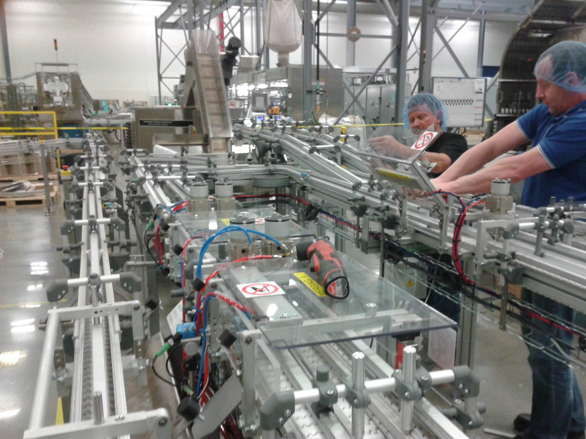

Codice interno: GOM-01

I nastri trasportatori in gomma sono progettati per applicazioni gravose, dove è richiesta elevata resistenza meccanica, durata e capacità di trasportare materiali pesanti o abrasivi. Disponibili con diverse tele interne e rivestimenti, garantiscono prestazioni eccellenti anche in ambienti difficili.
Realizziamo nastri in gomma per applicazioni gravose e ambienti difficili.
Contattaci